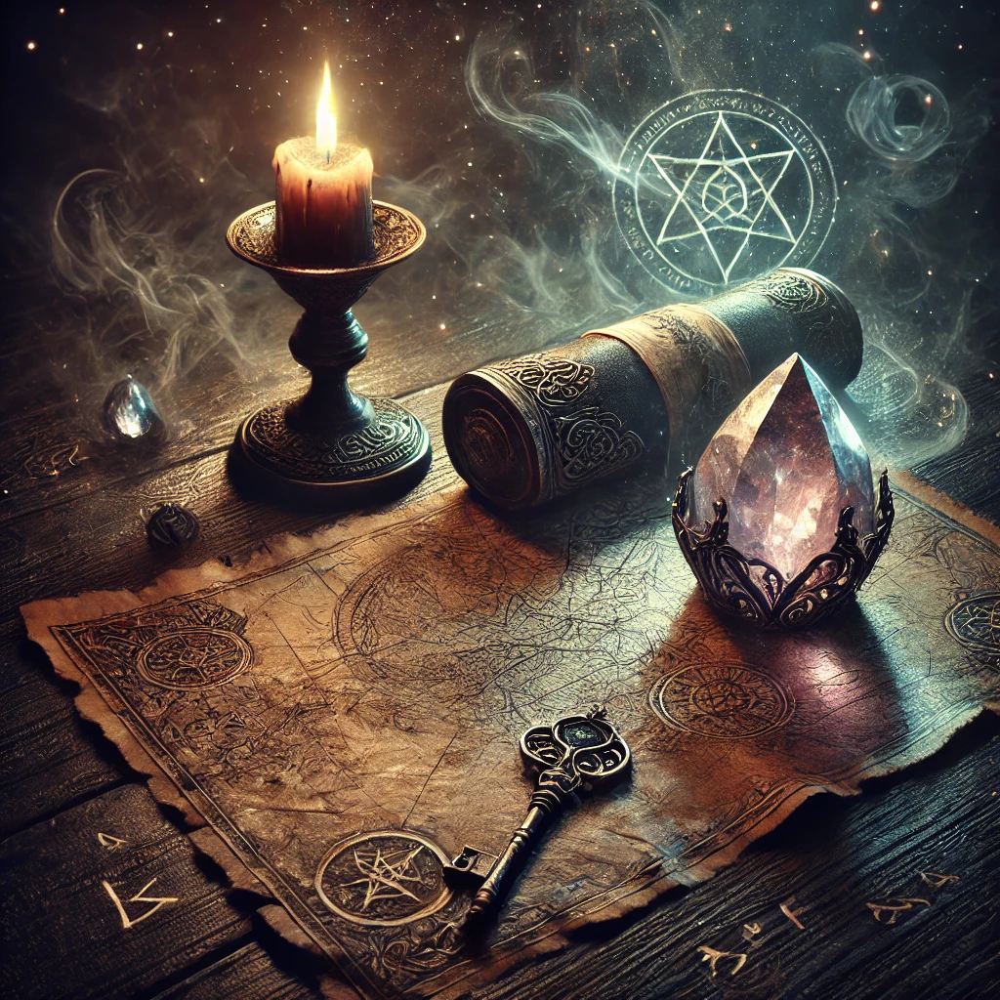

Capítulo 1: O Chamado das Sombras
O silêncio pesava na casa de Rodrick como uma mortalha. O aprendiz Elias andava de um lado para o outro no pequeno salão repleto de pergaminhos e livros desordenados, o cheiro de cera queimada e ervas secas impregnando o ar. Ele mal podia acreditar que o homem que o havia ensinado por tantos anos estava morto. No entanto, o grimório deixado sobre a mesa parecia sussurrar por atenção, como se ainda pulsasse com a essência de seu mentor.
Elias folheou o grimório, sentindo o toque áspero das páginas antigas sob seus dedos. Ele se lembrava da voz firme de Rodrick enquanto lhe dizia: "A magia é uma chama, Elias. Pode iluminar ou consumir, dependendo de quem a empunha."
Subitamente, um vento invisível atravessou a sala, fazendo com que as páginas do grimório se abrisse em uma seção que Elias nunca vira antes. Havia ali três objetos cuidadosamente desenhados e anotados com escritas que tremeluziam, como se escritas pelo próprio fogo.